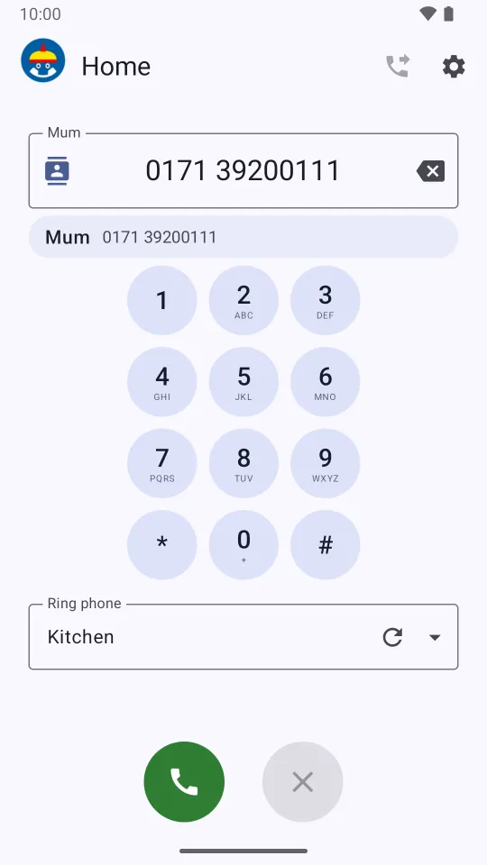
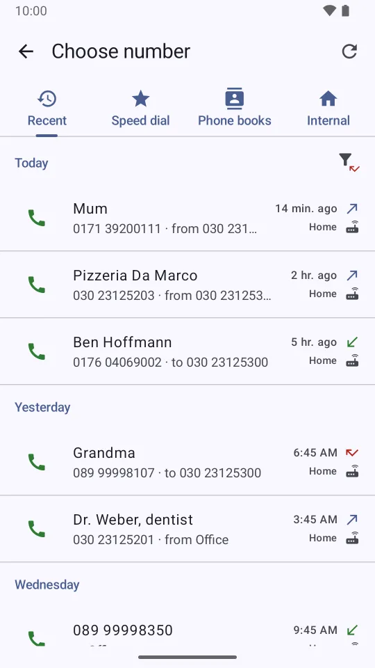
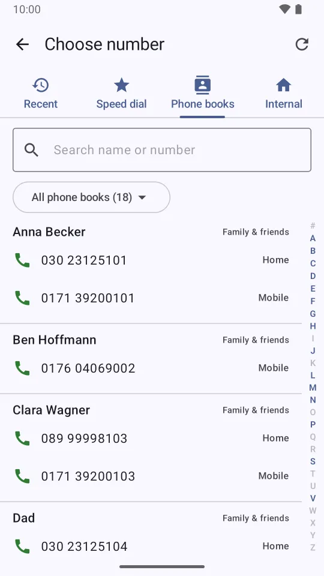
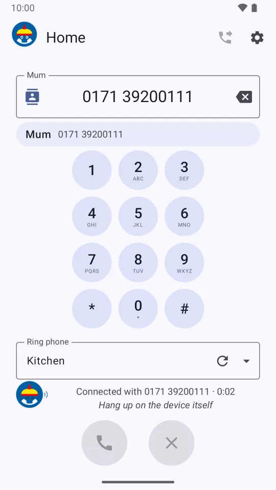
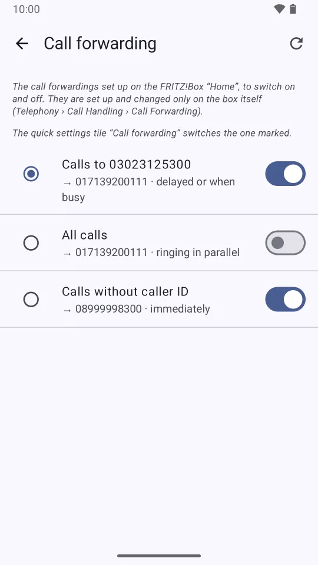

Dial from your smartphone, talk on your FRITZ!Box headset
Pickelhaube is a small Android app that places calls through your FRITZ!Box router – exactly like the router's own dial help (click-to-dial).

Pick a number on your Android phone, tap the green button – the device you chose on the FRITZ!Box rings: a DECT headset, a speakerphone, or a handset. Pick it up, and the FRITZ!Box dials the number from there. The call runs over your landline or internet telephony, not over your mobile plan.
When it makes sense
Headsets and speakerphones
The main use. DECT headsets and conference speakerphones attached to a FRITZ!Box have no keypad – they can't dial on their own. Pickelhaube dials for them, with your smartphone as the keypad and address book.
Several locations
Home, office, a second home: with several FRITZ!Boxes configured, you dial the same way everywhere, from the same contacts and speed dials. The app picks the box of the network you're in.
Ordinary phones only
Limited benefit. A normal handset can dial by itself – what you gain is dialling from your smartphone's contacts and the recent calls, instead of typing on the handset.
Get the app
Pickelhaube is on Google Play – thanks to everyone who took part in the closed test. GitHub has the full version as well, which can also show the calls of your phone's own telephony app.
Get it on Google Play Download from GitHubCheck that the download is genuine
Every release of Pickelhaube on GitHub is signed with the same certificate. Its SHA-256 fingerprint:
7D:
To compare it: on a computer with apksigner verify --print-certs from the Android SDK,
or on the phone with an app such as AppVerifier. Android checks it as well: an update installs over
the version you have only if it is signed with the same certificate.
What it does




Dial help
Uses the FRITZ!Box's TR-064 interface: the box rings your handset first, then dials the target number. A typo? Tap right after it in the number and fix it there.
Phone books & recent calls
Pick numbers from the box's phone books and call list – and optionally from your phone's own contacts. Recent calls by day, the missed ones at a tap, and a call button on every number. Optionally, “Call via FRITZ!Box” right in your phone's contacts app.
Live call status
See whether the handset is ringing, the call is connected, and how long it lasted. Busy? Try again with a tap.
Speed dial
Your own speed dials 1–9, plus the FRITZ!Box speed dials 00–99 you already know from **7. Removed by mistake? Undo.
Several boxes
Home and office? Pickelhaube recognises which FRITZ!Box is in the current network and uses that one. Away from home, it tells you what helps.
Call forwarding
Switch the forwardings set up on your box on and off – also from a quick settings tile.
Suggestions while typing
From the third digit on, matching numbers and names from your phone books and recent calls – also by the letters on the keys. A number typed in full shows whose it is.
Internal calls
Call one of the box's phones from another – the kitchen from the study.
Home screen widget
The numbers you call most, one tap away – each widget with its own list.
Welcome tour
On first start, a friendly guide leads step by step to the connection with your box.
Pull to refresh
Changed something on the box? Pull the dialer down, and everything is read from it again.
Tablets and landscape
Turned sideways, the keypad moves beside the rest – on a phone and on a tablet.
A helmet with character
The Pickelhaube rings along while your phone rings, nods when the call is connected and waves goodbye – and key tones, if you like.
Read the full guide →
Questions and answers →
What changed in each version →
What you need
- An Android phone, Android 8.0 or newer
- A FRITZ!Box with telephony, with dial help and TR-064 access switched on (how)
- The phone in the same home network as the box – or connected to it through a VPN
Privacy in short
Pickelhaube has no account, no ads, and no cloud service of its own. It talks to the FRITZ!Box(es) you configure; your router password is stored encrypted on the phone. Details are in the privacy policy.
Languages
English, German, Dutch, French, Italian, Spanish and Polish.
Feedback
Something doesn't work, an idea, a question, or praise? Tell me through the feedback form.